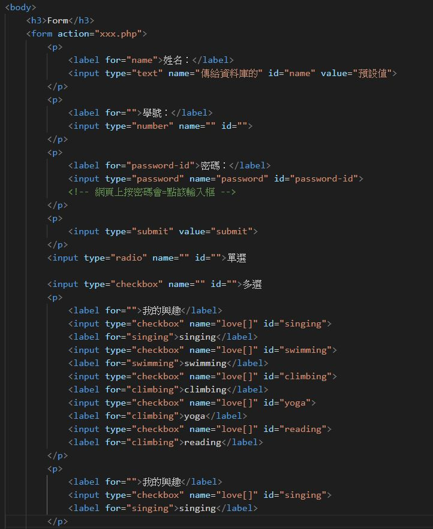
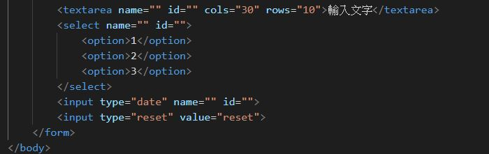

Link&Absolute/Relative path
- link 網頁 用a tag連結: a href="網址" youtube
- link 網站 *相對路徑:
是相對於現在目錄的路徑表示，換言之就是你現在這個檔案在哪裡，這個目錄的路徑起始點就在哪裡，所以每個檔案的相對路徑起始點都可能會不同。
用法:../上一層 ./同一層
範例:
page.html => 同層目錄中的 html 檔
./css/all.css => 同層目錄中的 css 資料夾，裡面的 css 檔
../img/logo.png => 上一層目錄中的 img 資料夾，裡面的圖檔
*絕對路徑
是一個絕對位置，不隨著檔案位置的變換而改變他的路徑。 這個檔案在本機端或是網路上的絕對位置。
範例:
file:///c:/img/logo.png => 電腦C槽下的一張圖片
https://www.yahoo.com.tw/img/logo.png => 一個網址下的圖片
/img/logo.png => 根目錄下的一張圖片
一般用相對路徑
*在新視窗開啟>> tag內+target="_blank"a href="網址" ="_blank">more...
Formatting
一般文字
- 粗體Bold text：用 b tag/ strong tad(strong有語意，電腦知道他是強調的)
- 斜體Italic text：用: i tag
- hightlight：用mark tag
刪除線：s tag / del(有語意)- 底線：u tag / ins(有語意)
-
縮排: pre tag - This is superscripted text.
- This is subscripted text.
引言
HTML contains several elements for defining text with a special meaning.
Images
Table
- table tag+ tr tag(table row)+ th(head)/td(date) tag
*從橫向第一排開始 - 合併格子：tag屬性+colspan(橫向)/rowspan(豎向)="格數"
Form
- 使用form、input、label、select等tag 組成表單的介面
-
範例：

 

OtherStuff
- ul
- ol *下一階層都要與li配合
- 文字置中:(CSS)text-align: center;